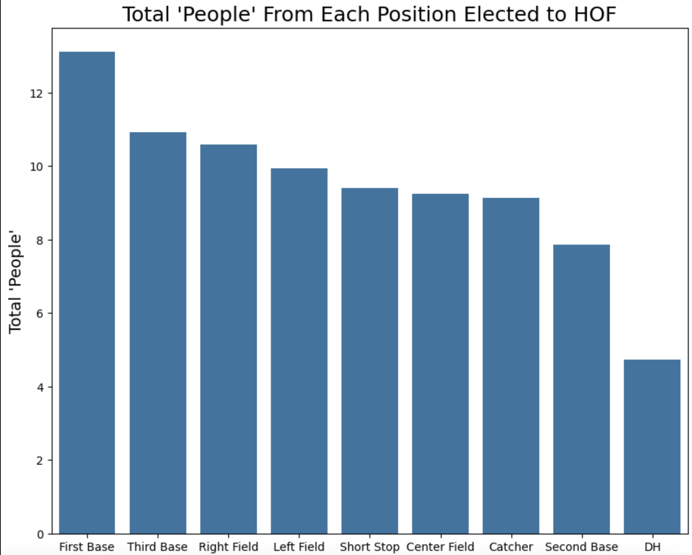
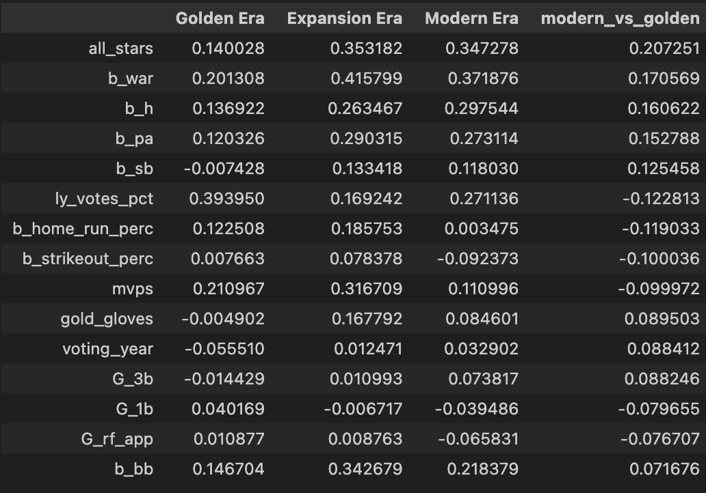
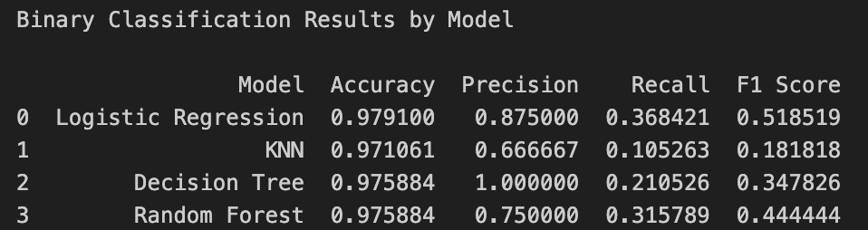
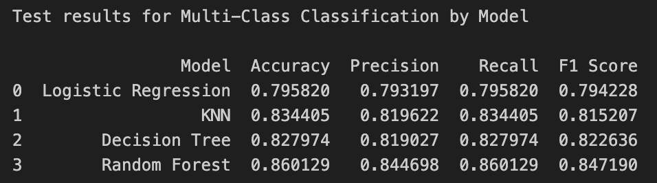
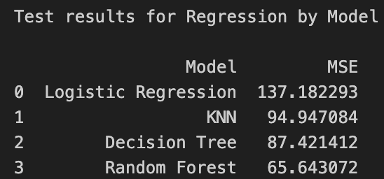

Final Report
We embarked on this project to explore the state and history of Baseball’s Hall of Fame. For so many children and adults alike, baseball is an incredibly comforting pastime. For those lucky enough to play it, the goal is one day suiting up to take the field for an MLB game. While only slightly over 20,000 men have had the golden opportunity to accomplish this feat, only ~1% achieve the ultimate goal: Baseball Immortality and a spot in the Hall of Fame. Because so many people are in love with the game, and because the peak of accomplishment is so difficult to achieve, it seems only fitting to analyze what goes into a Hall of Fame career.
There were three major objectives of this research. First, we aim to understand what the landscape of the Baseball Hall of Fame looks like. Second, we wanted to investigate what it takes to make the Hall of Fame. What stats are important? How has this changed over time? Finally, our major priority was to predict the outcome of BBWAA HOF votes. Can we determine who will make the Hall of Fame on a specific ballot? Who will be eliminated from future contention? By doing this exercise, we hope to offer a path to making predictions on future ballots, so fans can understand what chances their favorite players have to achieving imortality.
Our research was very succesful, as we have important key findings from each of our three major objectives. First, when looking at the Hall of Fame, we confirm that it is truly a difficult accomplishment, as only ~1% of any player who has ever stepped foot on the field end up in the Hall of Fame. Additionally, even if you are lucky enough to end up on a HOF ballot, only ~13% of all votes end in elections, and the majority of players throughout history have been eliminated from any future contention in just their first year of eligibility.
When it comes to the qualifications needed to make the Hall of Fame, we determined that the position played make a noticable impact. Some positions like first base and third base make up a plurality of succesful elections, while positions such as catcher and second base are much less likely. As a result, if your favorite player is a catcher or second baseman, like mine, they may have a higher bar to make the Hall. . When looking at the statistics that aid in a succesful election, it became clear that many of the commonly cited basic stats do a good job of predicting whether or not a player will make the Hall. These included Hits, Walks, and MVP awards won. Additionally, advanced stats like WAR, which is commonly thought of as the ultimate measure of ‘goodness’ in baseball, is the strongest predictor of an election. This is a good finding, as WAR was not a referenced stat before the recent rise of sabermeterics. On top of these findings, we also saw that the important stats in determining whether a player will make the Hall have suprisingly not changes significantly over time, meaning that even before todays advanced metrics were known, fans and voters had some level of ‘innate understand’ of their impact on the game! 
Finally, when we looked to predict the outcomes of BBWAA ballots, we learned that it is certainly a reasonable task! Whether it was predicting binary outcomes for whether a player will be elected, non-binary outcomes including classes for elimination, expiration, and limbo, or predicting the actual vote percent for the player, we uncover methods that offer accuracy increases over baseline random guessers. These results can be seen in the below 3 tables. We also learned an important lesson about imbalanced datasets with regards to interpreting results. While our classification accuracies were ~98%, around 97% of all targets were non-elections. Thus, we determined model performance by considering secondary metrics like F1, which balances the tasks of correctly predicting elections while also succesfully finding every election.



The goal for this project is to be used to better understand how Hall of Fame voting operates, so fans of all teams can gauge how their favorite playes may fare in the process one day, but also to analyize and appreciate the immense skill of players across the league! I hope that other’s may use this data and potentially prediction models to look forward at current and future players working towards the Hall and predict their chances of election, instantly becoming the most informed at the inevitable HOF arguements that pop up among groups of fans.
While we covered many different topics during this research, and collected many key takeaways and succesful prediction models, there too still exists future work to be completed on the topic. First and foremost, I would like to be able to include pitchers alongside batters for the full analysis. This involves going back to the scraping stage, and determining in what specific instances pitcher’s HTML differs from the majority template. I would like to further segment predictions by MLB era. In the exploratory analysis, we saw in some specific ways how the ballot has changed over time. While the differences did not seem massive, there is potential that building a model on more recent data will improve results.
Additionally, I would like to create an in-depth analysis of players who have not made a Hall of Fame ballot before, to determine which players if any should have either been voted on, or potentially even elected. This may result in a series of players who have been ‘robbed’ by the BBWAA. If this list exists, we can also cross reference with the other HOF committees to see if they do a good job of righting past wrongs.
Finally, I think there is opportunity to make the predictive models more publicly accesable. By letting users access the models and plug in players they are interested in, we would create a way for readers and fans to engage more directly with the research!